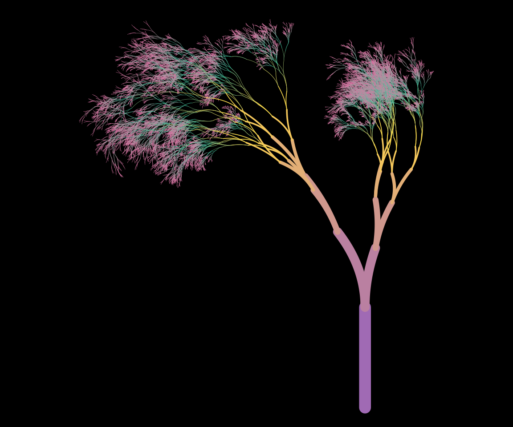
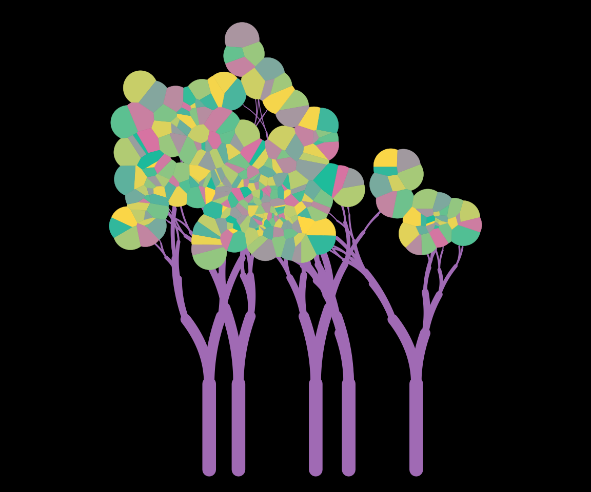
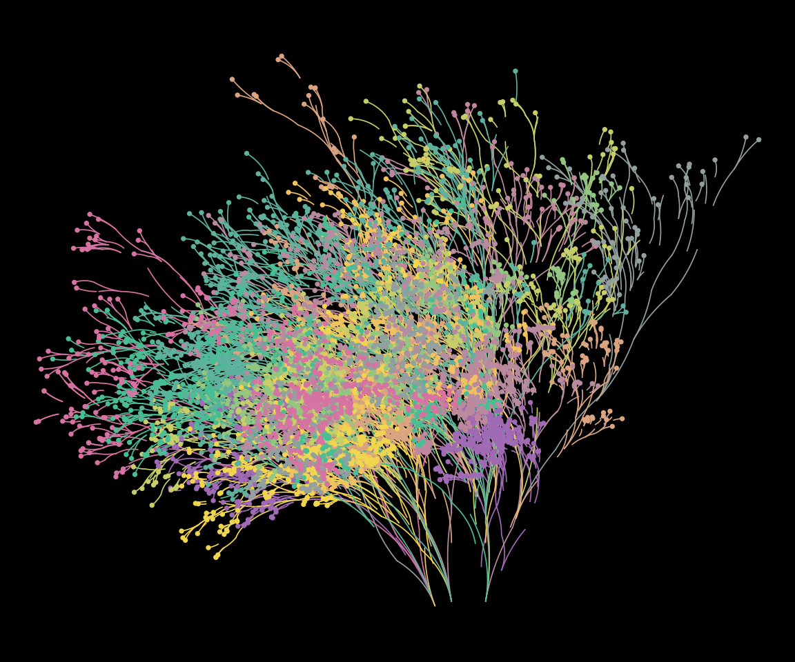
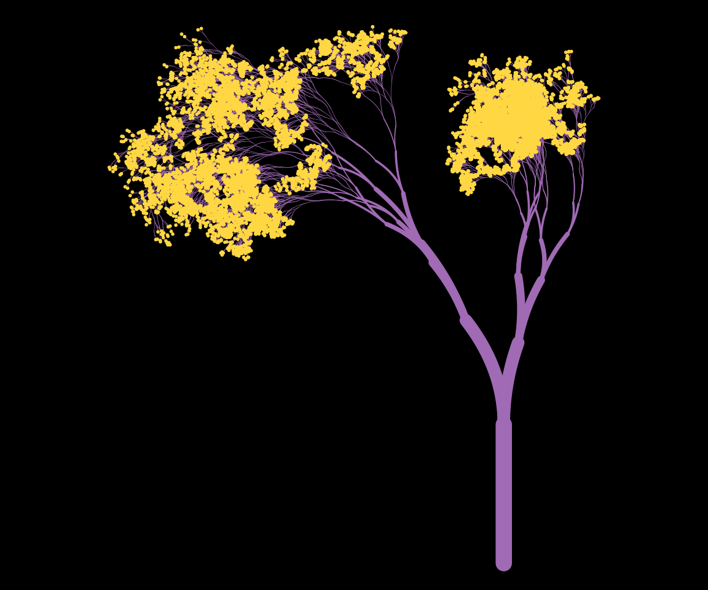
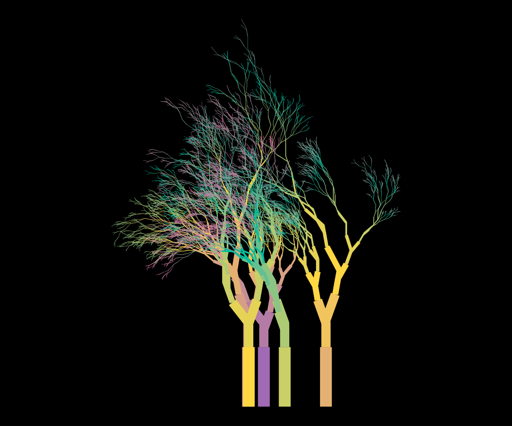
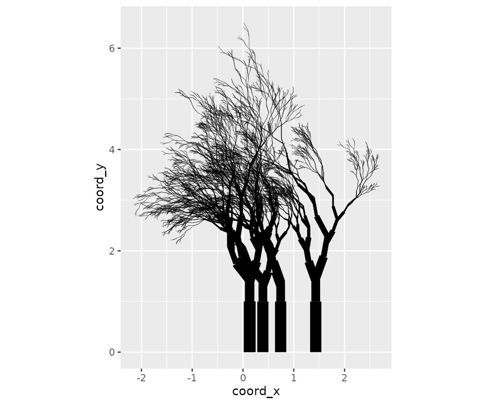

The getting
started article showed how to modify the appearance of the output by
specifying the background and palette
arguments. Changing these arguments will change the colours to the plot,
but only the colours. It does not affect the way the plot function
interprets the underlying data structure. However, given that the plots
are created using ggplot2, there is a lot more flexibility in the the
kind of images that can be created. The flametree_plot()
function contains a style argument that alters the ggplot2
code used to create the image, and can have a much larger effect on the
resulting image. I’ll walk through the different styles in this article,
using the following palette:
shades <- c("#A06AB4", "#FFD743", "#07BB9C", "#D773A2")Plain
Setting style = "plain" (the default) creates an output
that resembles the original “flametree” images: colours vary along the
body of the trees, and no “leaves” are drawn.
flametree_grow(time = 14) |>
flametree_plot(
palette = shades,
style = "plain"
)
Voronoi
Setting style = "voronoi" creates a plot where the tree
bodies are uniform in colour, and coloured “leaves” are drawn at the top
of the trees using a Voronoi tessellation of the locations of the
terminal nodes. Note that computing the tessellation is computationally
expensive, and this will likely produce errors if there are too many
nodes.
flametree_grow(time = 6, trees = 5) |>
flametree_plot(
palette = shades,
style = "voronoi"
)
Native Flora
The style = "nativeflora" style creates a plot in which
tree bodies are rendered as thin segments, with a proportion of those
segments removed, and small points are drawn at the end of each terminal
segment.
flametree_grow(
time = 10,
trees = 12,
shift_x = spark_nothing()
) |>
flametree_plot(
palette = shades,
style = "nativeflora"
)
Wisp
Setting style = "wisp" is similar to the “nativeflora”
style, but no segments are removed, and the tree body is wider at the
base.
flametree_grow(time = 14) |>
flametree_plot(
palette = shades,
style = "wisp"
)
Minimal
Setting style = "minimal" produces a variant that does
not use curved segments.
flametree_grow(time = 10, trees = 5) |>
flametree_plot(
palette = shades,
style = "minimal"
)
Theme Gray
Finally, if the user sets style = "themegray" the result
will be a plot that uses the traditional gray theme used in ggplot2.
flametree_grow(time = 10, trees = 5) |>
flametree_plot(
palette = shades,
style = "themegray"
)